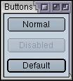
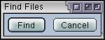

Adding Buttons
In this section, we will look at how to add some simple buttons to a window.
Adding Buttons to a Window
The window we've created so far has had nothing in it, so it isn't very interesting yet. In this section, we will add two buttons, a Find button and a Cancel button. We will also learn a simple way to position them on the window.
Like HTML, XUL has a number of tags that can be used to create user interface elements. The most basic of these is the button tag. This element is used to create simple buttons.
The button element has two main properties associated with it, a label and an image. You need one or the other or both. Thus, a button can have a label only, an image only or both a label and an image. Buttons are commonly used for the OK and Cancel buttons in a dialog, for example.
The button tag has the following syntax:
<button
id="identifier"
class="dialog"
label="OK"
image="images/image.jpg"
disabled="true"
accesskey="t"/>The attributes are as follows, all of which are optional:
- idA unique identifier so that you can identify the button with. You'll see this attribute on all elements. You'll want to use this if you want to refer to the button in a style sheet or script. However, you should add this attribute to almost all elements. It isn't always placed on elements in this tutorial for simplicity.
- classThe style class of the button. This works the same as in HTML. It is used to indicate the style that the button appears in. In this case the value dialog is used. In most cases, you will not use a class for a button.
- labelThe label that will appear on the button. For example, OK or Cancel. If this is left out, no text appears.
- imageThe URL of the image to appear on the button. If this is attribute is left out, no image appears. You can also specify the image in a stylesheet using the list-style-image property.
- disabledIf this attribute is set to true, the button is disabled. This is usually drawn with the text in grey. If the button is disabled, the function of the button cannot be performed. If this attribute is left out entirely, the button is enabled. You can switch the disabled state of the button using JavaScript.
- accesskeyThis should be set to a letter that is used as a shortcut key. This letter should appear in the label text and will typically be drawn underlined. When the user presses ALT (or a similar key that varies on each platform) and the access key, the button will be focused from anywhere in the window.
Note that a button supports more attributes than those listed above. Others will be discussed later.
By default, buttons will appear on the window without any special appearance. Only the text and image will appear with a raised border around it. In some cases, such as an OK button, this may be what you want. In other cases however, you may want to have a different border appear around the button. Or, you may want the text to highlight when the user moves the mouse over the button. The usual way to do this is much like in HTML by changing the styles of a button using style sheets or scripts.
Some examples of buttons:
Example 2.2.1: Source View<button label="Normal"/> <button label="Disabled" disabled="true"/> <button label="Default" default="true"/>
 The examples above will generate the buttons in the image. The first button is a normal button. The second button is disabled so it appears greyed out. The third button is a default button and has a thicker border. The image here is for the modern skin. Other skins will render disabled and default buttons differently.
We'll start by creating a simple Find button for the find files utility. The example code below shows how to do this.
<button id="find-button" label="Find"/>
Let's add this code to the file findfile.xul that we created in the previous section. The code needs to be inserted in-between the window tags. The code to add is shown in red below:
<?xml version="1.0"?>
<?xml-stylesheet href="chrome://global/skin/" type="text/css"?>
<window
id="findfile-window"
title="Find Files"
orient="horizontal"
xmlns="http://www.mozilla.org/keymaster/gatekeeper/there.is.only.xul">
<button id="find-button" label="Find"/>
<button id="cancel-button" label="Cancel"/>
</window>You'll notice that the Cancel button was added also. The window has been given a horizontal orientation so that the two buttons appear beside each other. If you open the file in Mozilla, you should get something like the image shown here.

(Next) In the next section, we will find out how to add labels and images to a XUL window.
Examples: 2.2.1